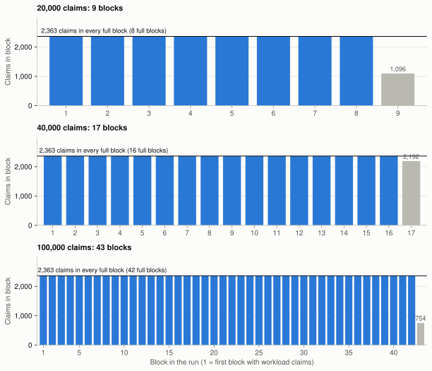
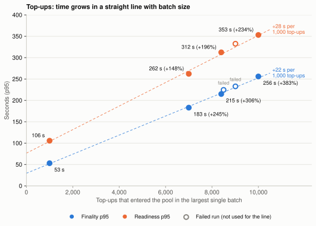
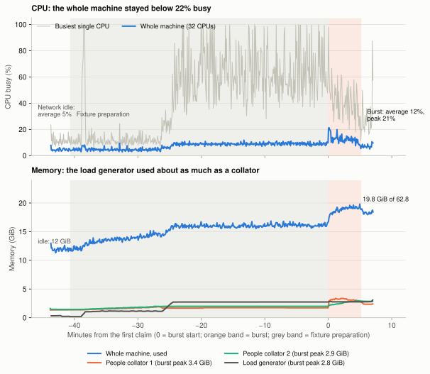

Coinage stress testing
Five flows on a local PreviewNet, from 100 to 150,000 actors
Full report · Appendix · press S for speaker notes
Starting point
One round trip, and you know if it worked.
"Accepted" only means it got in the door. We only know it worked at the end.
So I took the metrics we use for REST API load tests, like JMeter's, and changed what "a response" means: a successful receipt in a finalized block.
The metrics
| JMeter / REST API | What we measure in Coinage | Why it matters | |
|---|---|---|---|
| Assertion passed | → | Verified receipt + correct coin state | Did the transaction succeed and leave the right state? |
| Error % | → | No verified receipt | A lost payment is the worst outcome |
| HTTP 503 / refused | → | Pool rejections (error 1016) | How many the node refuses when too many arrive at once |
| Median, 95% and 99% line | → | Finality p50 / p95 / p99 | How long people at the back wait |
| Throughput (requests/s) | → | Transactions per block | How fast a queue can drain |
| Thread group ramp-up | → | At once vs in waves; pool size | Does spreading the load help? |
| Server monitoring (PerfMon) | → | Machine CPU and memory | How much CPU and memory the whole run uses |
One Coinage-only metric: readiness, when a new coin can actually be used. REST APIs have no equivalent.
The scenarios
Pays with an external asset, gets a voucher
Transfers one coin
Splits a coin, then claims it
Loads a coin into a recycler
Pays one merchant
Free quota (all six profiles) and offboarding (preliminary): cash out
Number = largest fully verified run. Each flow ran at several sizes, at once or in waves, on the default pool or a bigger one.
Why only five? We had limited time, so we covered the main payment flows first. Sponsored pot, cleanup backlog, instance proliferation and sustained load are next.
Result 1 · Correctness
Result 2 · Throughput

Think of a funnel. The pool is the wide top: it decides how many can wait. The block is the narrow spout: every 6 seconds it lets through 1.5 s worth of computation.
A bigger pool only widens the top. It doesn't widen the spout. And because the spout runs at a steady pace, it also sets the response time (next slide).
Result 3 · Response time

+28 s readiness p95 per extra 1,000.
This follows from the last slide. Blocks come at a fixed pace, every 6 s, and each transaction type costs a fixed amount, so time adds up in a straight line.
A full block holds 260 top-ups. So 1,000 more top-ups need about 3.8 more blocks: about 23 s, close to the 22 s we measured.
Result 4 · Error rate under a spike
The default pool holds 9,011 (8,192 ready + 819 future). Sending in waves fixed it in every flow, and so did a bigger pool wherever we have a result.
Result 5 · What "fit in a block" means
It's not the size in bytes. A block can hold 3.75 MiB, and 23 unloads are only 39 KB. The limit is computation: 1.5 s per block for normal transactions. An unload costs about 100 claims, because it carries two ring-VRF proofs that the chain must check.
So unloads are the slowest: 10,000 offboards at once needed 392 blocks and took 56 minutes at p95. Sent in waves, all 10,000 verified.
Result 6 · End to end
| Stage | Transactions | Fit per full block | Blocks used | Time for 95% (p95) |
|---|---|---|---|---|
| Top-up | 1,000 | 260 | 5 | 53 s |
| Payment unload | 1,000 | 23 | 44 | 297 s |
| Claim | 1,000 | 2,363 | 1 | 31 s |
| Recycle | 1,000 | 287 | 4 | 48 s |
| Offboard | 1,000 | 23 | 44 | 272 s |
1,000 people each went through all five stages: 5,000 transactions, every one verified. The two unload stages need 44 blocks each, so they take most of the time.
Server monitoring

About 5% idle → 12% average across 32 CPUs.
Memory 12 → 19.8 GiB, partly our load generator.
The machine never came close to full, because block weight caps how much work each block does. So the hardware wasn't what limited us.
Our load generator shared this machine, so these numbers include it.
Conclusion
How many transactions the chain handles in total.
What we see today: every full block stops at its computation budget while the machine stays mostly idle.
How many of one specific extrinsic the block weight can sustain.
Results differ a lot by action: 2,363 claims fit in a block, but only 23 unloads.
At today's block weight, with a block every 6 s, the ceiling for one transaction type alone is about 390 claims per second, or about 4 unloads per second (roughly 13,800 an hour). We can't support many more transactions unless this limit is addressed, for example with lighter transactions, more computation per block or more blocks. We should be wary of this.
Notes for testing future features
We don't need to rerun these tests: they already show the limits. These notes are for testing future features.
Today the load generator shares CPU and memory with the nodes, so we can't fully separate the chain's cost from our tool's cost.
It reached 2.8 GiB and about one full CPU core while signing.
Stream results to disk instead of holding every transaction and watch in memory while we wait for them to finish.
One million claims ran out of a 24 GiB heap. At 20,000, watch status was unreliable. At 10,000, the sender disconnected.
Pin each validator and collator to its own cores, so each node's work is measured on its own and more objectively.
Draft: K3s CPU pinning spike (#42).
Wrap-up
Which bursts Coinage completed correctly, how long people waited, and where the limit is: block weight, not hardware. That limit decides how many transactions we can support.
A measured, sustainable TPS. These were finite bursts; the per-second figures are ceilings worked out from block weight, not measured rates.
Use the testing notes for future features. Still open if we need them: remaining offboarding profiles, full flow at 10,000 and above, sustained load, sponsored pot, cleanup backlog and instance proliferation.
Backup · Raising the limit
More cores (elastic scaling). 4 cores = 4 blocks per 6 s, so up to about 92 unloads instead of 23. Needs coretime, elastic scaling in the runtime and collators, and fast enough collators.
Lighter unloads. Each costs 62.9 ms, mostly two ring-VRF proof checks. Halve it and twice as many fit.
Bigger share for normal transactions. Up to about +20% (1.5 s → 1.8 s of the 2 s).
Not an option: heavier blocks. 2 s is about the most relay validators allow to re-check a parachain block. An idle collator doesn't change that.
The catch: with 4 cores, each block must be built in about 1.5 s. On our machine, building a full 23-unload block took 2.7 s (median of 391 blocks). So the real gain would be less than 4×. Locally we could test it by giving our parachain extra cores with a sudo call and turning on elastic scaling.